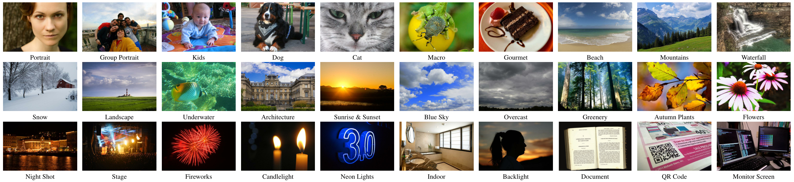

{kind=link}
ETH Zurich
Switzerland, 2025
| Angeline Pouget | Sidharth Ramesh | Maximilian Giang | Ramithan Chandrapalan | Toni Tanner | Moritz Prussing | Radu Timofte ✉ | Andrey Ignatov ✉ |
| angeline.pouget@gmail.com | siramesh@ethz.ch | giangm@ethz.ch | rachandr@ethz.ch | tannerto@ethz.ch | moritzpr@ethz.ch | radu.timofte@uni-wuerzburg.de | ihnatova@ethz.ch |
Abstract: AI-powered automatic camera scene detection mode is nowadays available in nearly any modern smartphone, though the problem of accurate scene prediction has not yet been addressed by the research community. This paper for the first time carefully defines this problem and proposes a novel Camera Scene Detection Dataset (CamSDD) containing more than 11K manually crawled images belonging to 30 different scene categories. We propose an efficient and NPU-friendly CNN model for this task that demonstrates a top-3 accuracy of 99.5% on this dataset and achieves more than 200 FPS on the recent mobile SoCs. An additional in-the-wild evaluation of the obtained solution is performed to analyze its performance and limitation in the real-world scenarios. The dataset and pre-trained models in this paper are provided below.

When solving the camera scene detection problem, one of the most critical challenges is to get high-quality diverse data for training the model. Since no public datasets existed for this task, a new
| Backbone Architecture | Model Type | Input Size | Model Size, MB | Top-1 Accuracy, % | Top-3 Accuracy, % |
|---|---|---|---|---|---|
| MobileNet-V2 | FP32 | 224 × 224 | 73 | 94.17 | 98.67 |
| MobileNet-V2 | INT8 | 224 × 224 | 19 | 94.17 | 98.67 |
| MobileNet-V1 | FP32 | 224 × 224 | 208 | 92.67 | 99.50 |
| MobileNet-V1 | INT8 | 224 × 224 | 52 | 91.50 | 99.00 |
While the proposed models demonstrate high accuracy on the CamSDD dataset, their real performance on live camera data is the most important for this task. For this, we developed an Android application that is using the obtained TensorFlow Lite models to perform real-time classification of the image frames coming from camera stream. We checked the predictions of the models on hundreds of different scenery, some sample results obtained with the
"Fast and Accurate Camera Scene Detection on Smartphones",
ETH Zurich
Switzerland, 2025